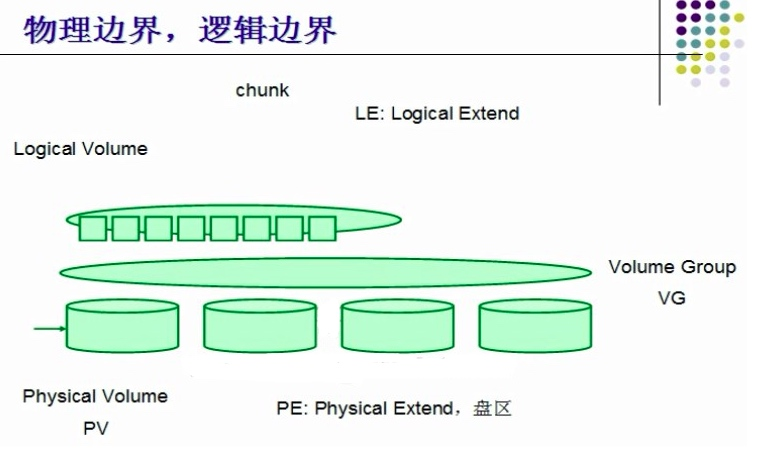

LVM管理

文章目录
1. lvm的应用场景及其弊端
应用场景： 随着公司的发展，数据增长较快，最初规划的磁盘容量不够用了
弊端： 数据不是直接存放在硬盘上，而是在硬盘的上面又虚拟出来一层逻辑卷存放数据，故而增加了磁盘数据恢复的难度
2. 物理卷、卷组、逻辑卷

物理卷(PV)：把常规的块设备（硬盘，分区等可以读写数据的设备）通过pvcreate命令对其进行初始化，就成了物理卷
卷组(VG):把多个物理卷的容量组成一个逻辑整体，可以从里面灵活分配容量
逻辑卷(LV):从卷组中划分部分空间成为一个可以读写数据的逻辑单元。需要对其格式化然后挂载使用
3. lvm管理
3.1 部署lvm
创建lvm步骤：
a) 添加物理磁盘，创建物理卷
b) 创建卷组，将物理卷加入卷组
c) 在卷组中划分逻辑卷
d) 格式化逻辑卷
e)挂载使用
1 2 3 4 5 6 7 8 9 10 11 12 13 14 15 16 17 18 19 20 21 22 23 24 25 26 27 28 29 30 31 32 33 34 35 36 37 38 39 40 41 42 43 44 45 46 47 48 49 50 51 52 53 54 55 56 57 58 59 60 61 62 63 64 65 66 67 68 69 70 71 72 73 74 75 |
1.准备物理磁盘
[root@wenhs5479 ~]# lsblk |grep "sd[b-f]"
sdb 8:16 0 3G 0 disk
sdc 8:32 0 3G 0 disk
sdd 8:48 0 3G 0 disk
sde 8:64 0 3G 0 disk
sdf 8:80 0 5G 0 disk
1.将磁盘加入pv
[root@wenhs5479 ~]# pvcreate /dev/sd[b-f]
Physical volume "/dev/sdb" successfully created.
Physical volume "/dev/sdc" successfully created.
Physical volume "/dev/sdd" successfully created.
Physical volume "/dev/sde" successfully created.
Physical volume "/dev/sdf" successfully created.
检查pv创建情况
[root@wenhs5479 ~]# pvs
PV VG Fmt Attr PSize PFree
/dev/sda2 centos lvm2 a-- <14.00g 0
/dev/sdb lvm2 --- 3.00g 3.00g
/dev/sdc lvm2 --- 3.00g 3.00g
/dev/sdd lvm2 --- 3.00g 3.00g
/dev/sde lvm2 --- 3.00g 3.00g
/dev/sdf lvm2 --- 5.00g 5.00g
2.创建名为wenhs的卷组
[root@wenhs5479 ~]# vgcreate wenhs /dev/sdb
Volume group "wenhs" successfully created
//检查卷组
[root@wenhs5479 ~]# vgs
VG #PV #LV #SN Attr VSize VFree
centos 1 2 0 wz--n- <14.00g 0
wenhs 1 0 0 wz--n- <3.00g <3.00g
3.创建逻辑卷, 分配名称, 以及大小, 指定卷组
[root@wenhs5479 ~]# lvcreate -L 500M -n lv1 wenhs
WARNING: xfs signature detected on /dev/wenhs/lv1 at offset 0. Wipe it? [y/n]: y
Wiping xfs signature on /dev/wenhs/lv1.
Logical volume "lv1" created.
检查逻辑卷
[root@wenhs5479 ~]# lvscan
ACTIVE '/dev/wenhs/lv1' [500.00 MiB] inherit
ACTIVE '/dev/centos/swap' [1.50 GiB] inherit
ACTIVE '/dev/centos/root' [<12.50 GiB] inherit
4.格式化文件系统
[root@wenhs5479 ~]# mkfs.xfs /dev/wenhs/lv1
meta-data=/dev/wenhs/lv1 isize=512 agcount=4, agsize=32000 blks
= sectsz=512 attr=2, projid32bit=1
= crc=1 finobt=0, sparse=0
data = bsize=4096 blocks=128000, imaxpct=25
= sunit=0 swidth=0 blks
naming =version 2 bsize=4096 ascii-ci=0 ftype=1
log =internal log bsize=4096 blocks=855, version=2
= sectsz=512 sunit=0 blks, lazy-count=1
realtime =none extsz=4096 blocks=0, rtextents=0
挂载并使用
[root@wenhs5479 ~]# mkdir /lv1
[root@wenhs5479 ~]# mount /dev/wenhs/lv1 /lv1/
[root@wenhs5479 ~]# df -Th
文件系统 类型 容量 已用 可用 已用% 挂载点
/dev/mapper/centos-root xfs 13G 6.8G 5.8G 54% /
devtmpfs devtmpfs 1.9G 0 1.9G 0% /dev
tmpfs tmpfs 1.9G 0 1.9G 0% /dev/shm
tmpfs tmpfs 1.9G 13M 1.9G 1% /run
tmpfs tmpfs 1.9G 0 1.9G 0% /sys/fs/cgroup
/dev/sda1 xfs 1014M 181M 834M 18% /boot
tmpfs tmpfs 378M 4.0K 378M 1% /run/user/42
tmpfs tmpfs 378M 32K 378M 1% /run/user/0
/dev/sr0 iso9660 11G 11G 0 100% /run/media/root/CentOS 7 x86_64
/dev/mapper/wenhs-lv1 xfs 497M 26M 472M 6% /lv1
[root@wenhs5479 ~]# |
3.2 卷组管理
- 扩展卷组，将新磁盘加入卷组
1 2 3 4 5 6 7 |
1.新硬盘加入pv [root@wenhs5479 ~]# pvcreate /dev/sdc Physical volume "/dev/sdc" successfully created. 2.使用vgextend扩展 [root@wenhs5479 ~]# vgextend wenhs /dev/sdc Volume group "wenhs" successfully extended |
- 缩减卷组，将指定磁盘从卷组中删除
1 2 |
[root@localhost ~]# vgreduce datavg /dev/sdb Removed "/dev/sdb" from volume group "datavg" |
- 数据迁移卷组，同一卷组的磁盘才可以进行在线迁移
1 2 3 4 5 6 7 8 9 10 11 12 13 14 15 16 17 18 |
1.检查当前逻辑卷VG中PV使用情况 [root@wenhs5479 ~]# pvs PV VG Fmt Attr PSize PFree /dev/sda2 centos lvm2 a-- <14.00g 0 /dev/sdb wenhs lvm2 a-- <3.00g <2.51g /dev/sdc wenhs lvm2 a-- <3.00g <3.00g 2.pvmove在线数据迁移至其他pv [root@wenhs5479 ~]# pvmove /dev/sdb /dev/sdb: Moved: 10.40% /dev/sdb: Moved: 100.00% 3.检查是否将sdb数据迁移至sdc [root@wenhs5479 ~]# pvs PV VG Fmt Attr PSize PFree /dev/sda2 centos lvm2 a-- <14.00g 0 /dev/sdb wenhs lvm2 a-- <3.00g <3.00g /dev/sdc wenhs lvm2 a-- <3.00g <2.51g |
3.3 逻辑卷管理
- 逻辑卷扩展，逻辑卷的扩展取决于卷组中的容量，逻辑卷扩展的容量不能超过卷组的容量
1 2 3 4 5 6 7 8 9 10 11 12 13 14 15 16 17 18 19 20 21 22 23 24 25 26 27 28 29 30 31 32 33 34 35 36 37 38 39 40 41 42 43 44 45 46 47 48 49 50 51 52 53 |
[root@wenhs5479 ~]# vgs
VG #PV #LV #SN Attr VSize VFree
centos 1 2 0 wz--n- <14.00g 0
wenhs 2 1 0 wz--n- 5.99g 5.50g
1.扩展lv逻辑卷
增加800M分配给逻辑卷 {注意: 800M +800M 不一样}
[root@wenhs5479 ~]# lvextend -L +800M /dev/wenhs/lv1
Size of logical volume wenhs/lv1 changed from 500.00 MiB (125 extents) to <1.27 GiB (325 extents).
Logical volume wenhs/lv1 successfully resized.
分配磁盘池中多少百分比给逻辑卷
[root@wenhs5479 ~]# lvextend -l +50%free /dev/wenhs/lv1
Size of logical volume wenhs/lv1 changed from <1.27 GiB (325 extents) to 3.63 GiB (930 extents).
Logical volume wenhs/lv1 successfully resized.
2.扩展fs文件系统
xfs扩容
[root@wenhs5479 ~]# xfs_growfs /dev/wenhs/lv1
meta-data=/dev/mapper/wenhs-lv1 isize=512 agcount=4, agsize=32000 blks
= sectsz=512 attr=2, projid32bit=1
= crc=1 finobt=0 spinodes=0
data = bsize=4096 blocks=128000, imaxpct=25
= sunit=0 swidth=0 blks
naming =version 2 bsize=4096 ascii-ci=0 ftype=1
log =internal bsize=4096 blocks=855, version=2
= sectsz=512 sunit=0 blks, lazy-count=1
realtime =none extsz=4096 blocks=0, rtextents=0
data blocks changed from 128000 to 332800
[root@wenhs5479 ~]# lvs
LV VG Attr LSize Pool Origin Data% Meta% Move Log Cpy%Sync Convert
root centos -wi-ao---- <12.50g
swap centos -wi-ao---- 1.50g
lv1 wenhs -wi-ao---- <1.27g
//ext扩容
[root@wenhs5479 ~]# xfs_growfs /dev/wenhs/lv1
meta-data=/dev/mapper/wenhs-lv1 isize=512 agcount=11, agsize=32000 blks
= sectsz=512 attr=2, projid32bit=1
= crc=1 finobt=0 spinodes=0
data = bsize=4096 blocks=332800, imaxpct=25
= sunit=0 swidth=0 blks
naming =version 2 bsize=4096 ascii-ci=0 ftype=1
log =internal bsize=4096 blocks=855, version=2
= sectsz=512 sunit=0 blks, lazy-count=1
realtime =none extsz=4096 blocks=0, rtextents=0
data blocks changed from 332800 to 952320
[root@wenhs5479 ~]# lvs
LV VG Attr LSize Pool Origin Data% Meta% Move Log Cpy%Sync Convert
root centos -wi-ao---- <12.50g
swap centos -wi-ao---- 1.50g
lv1 wenhs -wi-ao---- 3.63g |
- 对ext4文件系统的逻辑卷裁剪容量
1 2 3 4 5 6 7 8 9 10 11 12 13 14 15 16 17 18 19 20 21 22 23 24 25 26 27 28 29 30 31 32 33 34 35 36 37 38 39 40 41 42 43 44 45 46 47 48 49 50 51 52 53 54 55 56 57 58 59 60 61 62 63 64 65 66 67 68 69 70 71 72 73 74 75 76 77 |
首先自己创建一个1G的逻辑卷作为裁剪的对象 [root@wenhs5479 ~]# lvcreate -n extdisk -L 1G wenhs Logical volume "extdisk" created. [root@wenhs5479 ~]# mkfs.ext4 /dev/wenhs/extdisk mke2fs 1.42.9 (28-Dec-2013) 文件系统标签= OS type: Linux 块大小=4096 (log=2) 分块大小=4096 (log=2) Stride=0 blocks, Stripe width=0 blocks 65536 inodes, 262144 blocks 13107 blocks (5.00%) reserved for the super user 第一个数据块=0 Maximum filesystem blocks=268435456 8 block groups 32768 blocks per group, 32768 fragments per group 8192 inodes per group Superblock backups stored on blocks: 32768, 98304, 163840, 229376 Allocating group tables: 完成 正在写入inode表: 完成 Creating journal (8192 blocks): 完成 Writing superblocks and filesystem accounting information: 完成 [root@wenhs5479 ~]# mkdir -p /wenhs/extdisk [root@wenhs5479 ~]# mount /dev/wenhs/extdisk /wenhs/extdisk/ [root@wenhs5479 ~]# cp /etc/host* /wenhs/extdisk/ 1、如果已经挂载，必须先卸载 [root@wenhs5479 ~]# umount /dev/wenhs/extdisk 2、裁剪容量，必须是先检测文件系统 [root@wenhs5479 ~]# e2fsck -f /dev/wenhs/extdisk e2fsck 1.42.9 (28-Dec-2013) 第一步: 检查inode,块,和大小 第二步: 检查目录结构 第3步: 检查目录连接性 Pass 4: Checking reference counts 第5步: 检查簇概要信息 /dev/wenhs/extdisk: 16/65536 files (0.0% non-contiguous), 12960/262144 blocks [root@wenhs5479 ~]# resize2fs /dev/wenhs/extdisk 500M resize2fs 1.42.9 (28-Dec-2013) Resizing the filesystem on /dev/wenhs/extdisk to 128000 (4k) blocks. The filesystem on /dev/wenhs/extdisk is now 128000 blocks long. 3、调整完毕后采取裁剪逻辑卷容量 [root@wenhs5479 ~]# lvreduce -L 500M /dev/wenhs/extdisk WARNING: Reducing active logical volume to 500.00 MiB. THIS MAY DESTROY YOUR DATA (filesystem etc.) Do you really want to reduce wenhs/extdisk? [y/n]: y Size of logical volume wenhs/extdisk changed from 1.00 GiB (256 extents) to 500.00 MiB (125 extents). Logical volume wenhs/extdisk successfully resized. 4、强烈建议裁剪后，再次检测文件系统 [root@wenhs5479 ~]# e2fsck -f /dev/wenhs/extdisk e2fsck 1.42.9 (28-Dec-2013) 第一步: 检查inode,块,和大小 第二步: 检查目录结构 第3步: 检查目录连接性 Pass 4: Checking reference counts 第5步: 检查簇概要信息 /dev/wenhs/extdisk: 16/32768 files (6.3% non-contiguous), 10646/128000 blocks 5、挂载测试 如果能够挂载，一般说明裁剪成功，文件系统没有损坏 [root@wenhs5479 ~]# mount /dev/wenhs/extdisk /wenhs/extdisk/ [root@wenhs5479 ~]# df -Th 文件系统 类型 容量 已用 可用 已用% 挂载点 /dev/mapper/centos-root xfs 13G 6.8G 5.8G 54% / devtmpfs devtmpfs 1.9G 0 1.9G 0% /dev ..... /dev/mapper/wenhs-lv1 xfs 3.7G 27M 3.7G 1% /lv1 /dev/mapper/wenhs-extdisk ext4 460M 1.6M 424M 1% /wenhs/extdisk<-----而且文件系统容量被刷新了 |
缩减逻辑卷注意事项：
- 不能在线缩减，得先卸载；
- 确保缩减后的空间大小依然能存储原有的所有数据；
- 在缩减之前应该先强行检查文件，以确保文件系统处于一致性状态。使用命令e2fsck -f /PATH/TO/LV
- 只能缩减ext系列的,而xfs文件系统不适用
示例：
1.查看/etc/目录大小
1
|
du -sh /etc |
2.查看磁盘使用分区情况
1
|
lsblk |
3.查看innode使用情况
1
|
df -i /path/to/device |
4.查看磁盘block使用情况
1
|
df -h |
5.查看分区使用格式
1
|
df -Th |
6.查看一个设备的UUID
1
|
blkid /path/to/device |
7.解释/etc/fstab中每段含义
1 2 3 4 5 6 |
第一列表示设备的名称 第二列表示该设备的挂载点 第三列是文件系统 第四列是挂载选项 第五列是dump选项（用一个数字表示） 第六列（接下来的数字）表示文件系统检查选项 |
8.一个ext4的文件分区，当使用touch test.file命令创建一个新文件是报错，报错的信息提示磁盘已满，但是采用df –h 命令查看磁盘大小时，只是用了60%的磁盘空间，为什么会出现这个情况，说说你的理由.
1
|
innode使用完了,会有这样的错误 |
磁盘分区方案
在虚拟机中添加一块20GB的SCISI磁盘 在新硬盘中建立一个5GB的分区，一个10G的分区 一个格式化为ext4的文件系统,一个格式化为xfs的文件系统 新建两个目录站点进行挂载, 要求开机自动挂载该分区
LVM磁盘管理方案
在虚拟机环境中，新添加两块SCISI硬盘设备，完成硬盘检测及分区 建立逻辑卷mbvg, 格式化为ext4文件系统,分配1G逻辑分区供/box目录使用 第二块逻辑分区, 格式化为xfs文件系统, 分配1G逻辑分区供/xfs目录使用 最后使用扩容方案将/box站点扩展到2.8G磁盘使用空间, 将/xfs目录扩展到2G